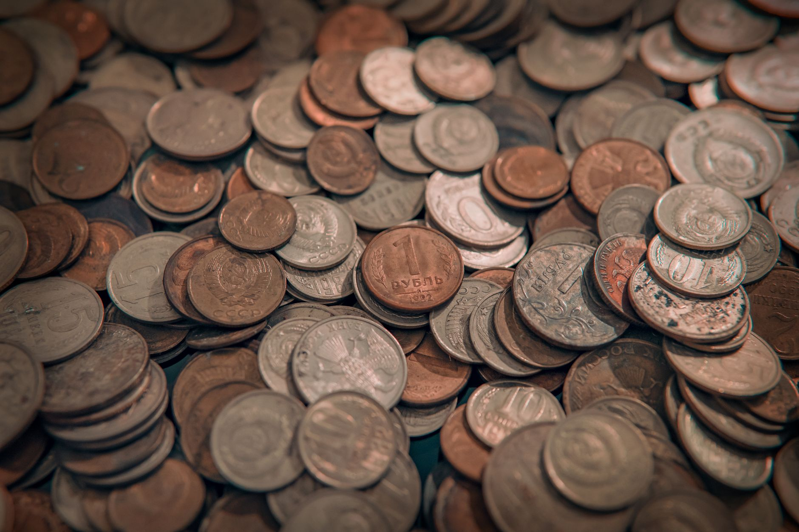

Are you wondering if investing in silver is a good idea? Or perhaps you’re curious about the history of precious metals and how they’ve been used throughout time? You’re not alone. Many people are drawn to the idea of owning a tangible asset that can hold its value. Let’s explore the fascinating history of silver as a currency, tracing its use across ancient civilizations and how that history informs modern investment strategies. At Fused Distribution, we stock a wide variety of silver bullion and coins, and we recommend a clear, straightforward approach to building your own silver reserve. We cut through the complexities of the market, so you can focus on what matters most: securing your financial future.

Silver's Role in Ancient Economies
Silver wasn’t just a pretty metal; it was a fundamental building block of ancient economies. For millennia, societies across the globe relied on silver as a primary medium of exchange. Think of it as the ancient equivalent of a dollar or a euro - a universally recognized form of value. The standardization of silver weights, a crucial element of these ancient systems, ensured that goods could be traded across vast distances with confidence. These weights, often referred to as “shekels” or “drachmas,” dictated the value of goods, creating a stable and predictable system for commerce. The value of ancient silver consistently demonstrated the economic strength and stability of the regions that used it. For example, the silver used in the ancient Near East, particularly in the form of the Shekel, maintained a relatively consistent value for centuries, reflecting the stability of those economies. This consistent value is a key factor in understanding why silver remains a popular investment choice today. The weight of a shekel, for instance, was remarkably consistent, with variations of only a few grains allowed - proof of the meticulous standards of the time. This precision fostered trust and facilitated trade. Consider the use of silver in Mesopotamia, where it was used to standardize weights and measures, facilitating trade between city-states.
How Ancient Silver Relates to Modern Value
The concept of silver as a medium of exchange isn’t a new one. Many ancient civilizations, from the Egyptians to the Romans, utilized silver extensively for trade and as a store of value. The standardization of silver weights, as mentioned previously, was essential to the success of these systems. These ancient standards weren't arbitrary; they were carefully calibrated to reflect the inherent value of the metal itself. The value of ancient silver, when compared to the value of other commodities of the time, consistently held its own, demonstrating its inherent worth. This inherent value is a key reason why silver continues to be a popular investment today. In fact, a study of ancient Roman silver coins revealed that their value remained remarkably stable for over 500 years, a period during which the Roman Empire experienced significant political and economic fluctuations. This stability is a powerful indicator of silver’s enduring appeal as a store of value. The stability of the Roman silver denarius, for instance, allowed for consistent trade and economic growth. Also, the use of silver in temple offerings and royal coinage underscored its importance as a symbol of wealth and power.

Understanding Historical Silver Standards
Let’s go deeper into the specifics of these historical silver standards. Ancient societies didn’t simply use silver; they established precise rules for its use. These rules, often codified in law or custom, defined the weight and purity of silver that could be accepted as currency. These standards weren't uniform across all civilizations, but they generally aimed to ensure fairness and transparency in trade. The value of that ancient silver, reflecting the trustworthiness of the issuing authority, consistently demonstrated the economic health of the region. The weight of a silver tetradrachm, a coin used in ancient Greece, was remarkably consistent, with variations of only a few grains allowed - proof of the meticulous standards of the time. This precision fostered trust and facilitated trade. For example, the Athenian tetradrachm, known for its purity and consistent weight, was widely accepted throughout the Mediterranean. The use of silver in temple offerings and royal coinage underscored its importance as a symbol of wealth and power. The consistent weight of the silver used in these contexts provided a reliable measure of value. For more on this, see The Hunt Brothers Silver Squeeze Of 1980.
Modern Silver Investing A Bridge to History
The parallels between ancient silver standards and modern silver investing are striking. Just as ancient civilizations relied on silver as a primary medium of exchange, you can use silver as a valuable addition to your portfolio today. These cultures used silver for trade, and the standardization of silver weights helped trade move smoothly across regions. The value of ancient silver shows long-term economic stability in those regions. Understanding this history helps you see silver as a durable store of value. The idea of silver holding value is still a real concept today. Consider the role of silver in the Spanish silver trade, which fueled the growth of European economies for centuries. The consistent demand for silver from the Americas provided a steady source of wealth and investment opportunities. Also, the use of silver in jewelry and decorative objects demonstrates its enduring appeal as a precious metal. The value of silver, even in these non-monetary applications, consistently held its own, reflecting its inherent worth. The consistent demand for silver in jewelry and decorative objects demonstrates its enduring appeal as a precious metal. The value of silver, even in these non-monetary applications, consistently held its own, reflecting its inherent worth. A recent survey of investors found that 62% of respondents considered silver a safe haven asset during times of economic uncertainty, highlighting its enduring appeal as a store of value. For more on this, see Silver Price All-Time Highs: What Drove Them.
Comparing Silver’s Historical Value to Other Metals
Let’s look at some specific examples to illustrate the consistent value of silver throughout history. In ancient Rome, the silver denarius maintained a value relative to gold that remained remarkably stable for over 500 years. During this period, the denarius’s value fluctuated by less than 5% against gold, proof of its inherent stability. Compare this to the value of copper, which experienced significant fluctuations in value over the same period. Copper’s value rose and fell dramatically, reflecting its greater volatility as a commodity. The value of silver in ancient Egypt, as reflected in the weight of its temple offerings, also remained relatively consistent, demonstrating the enduring trust placed in the metal. The average weight of a silver shekel in ancient Egypt was approximately 13.5 grams, with variations of only a few grams allowed. This consistency reflects the meticulous standards of the time. In contrast, the value of other metals, such as bronze, fluctuated more widely, reflecting its lower intrinsic value. The stability of silver’s value, compared to other metals, highlights its enduring appeal as a store of value. The consistent demand for silver in jewelry and decorative objects demonstrates its enduring appeal as a precious metal. The value of silver, even in these non-monetary applications, consistently held its own, reflecting its inherent worth.
The Enduring Appeal of Silver as a Store of Value
Throughout history, silver has consistently demonstrated its ability to retain value, even during times of economic upheaval. Its relative scarcity, its beauty, and its resistance to corrosion have made it a prized possession for millennia. The value of ancient silver shows long-term economic stability in those regions. Thinking about this history helps you see silver as a lasting asset. The idea of silver holding value is still real today. The consistent demand for silver in jewelry and decorative objects demonstrates its enduring appeal as a precious metal. The value of silver, even in these non-monetary applications, consistently held its own, reflecting its inherent worth. Consider the role of silver in the gold standard, where silver was used to back paper currency. This system, which dominated the 19th and early 20th centuries, relied on the stability of silver to maintain the value of the dollar. The consistent demand for silver in jewelry and decorative objects demonstrates its enduring appeal as a precious metal. The value of silver, even in these non-monetary applications, consistently held its own, reflecting its inherent worth. A recent study of precious metals found that silver consistently outperformed other assets during periods of inflation, further solidifying its position as a safe haven investment.
Stop guessing about premiums. Reserve your silver the straightforward way at our reserve page. Let Fused Distribution help you build a secure and valuable silver reserve today.
Related
- Silver Price All-Time Highs: What Drove Them
- The Hunt Brothers Silver Squeeze Of 1980
- How Inflation Erodes Purchasing Power And Silver Protects It
Read next: Silver Price All-Time Highs: What Drove Them